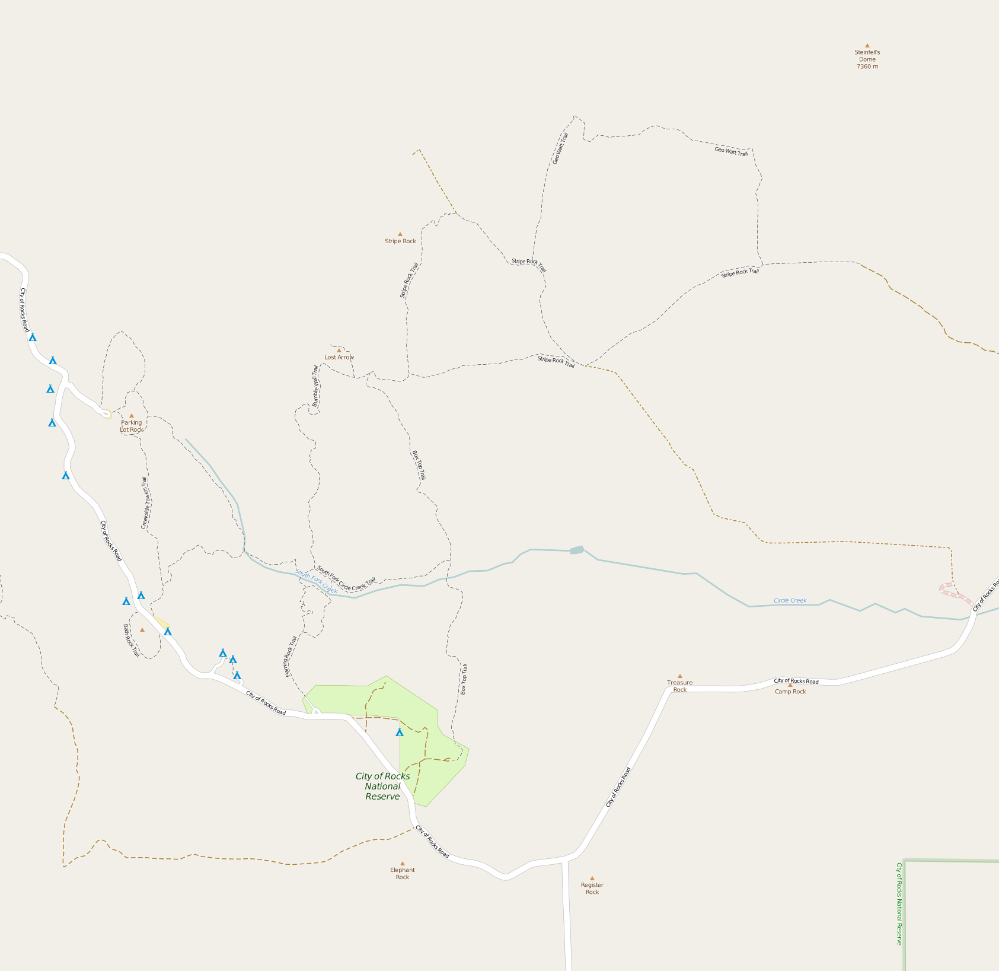
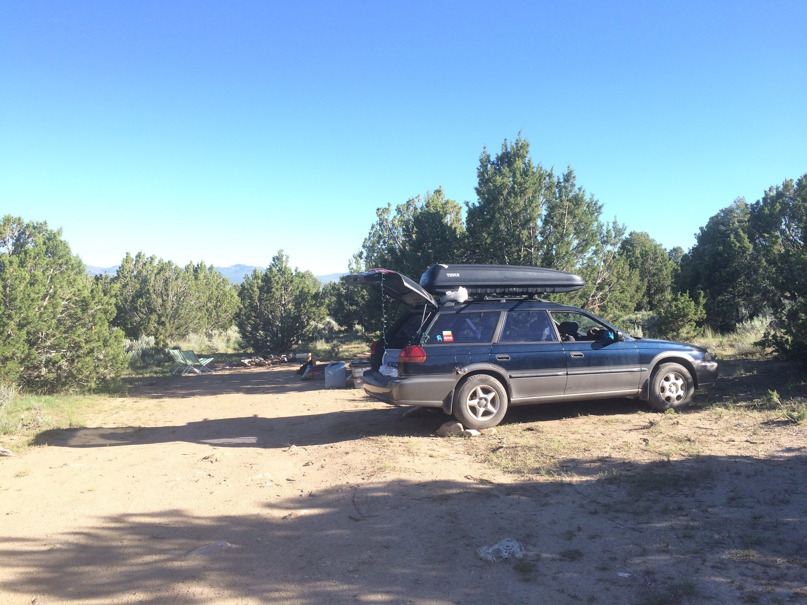
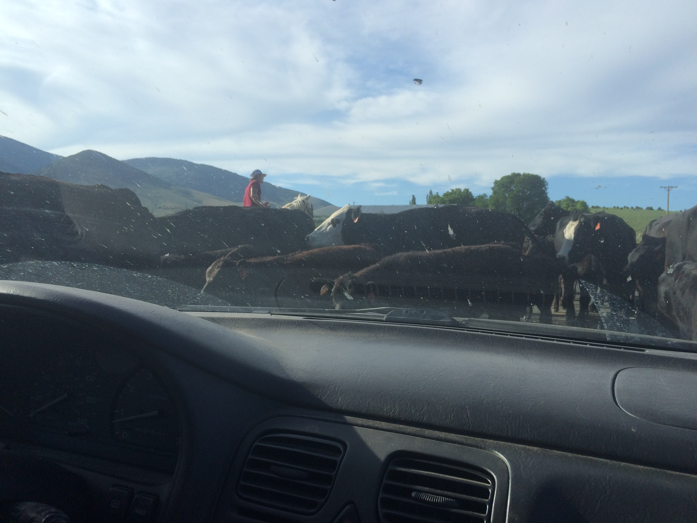
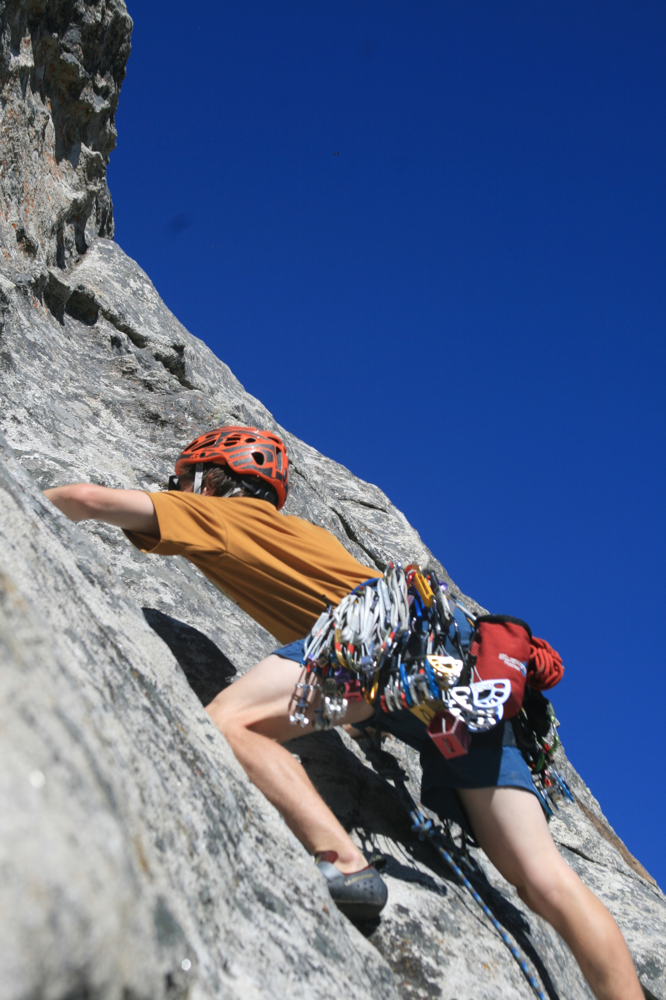
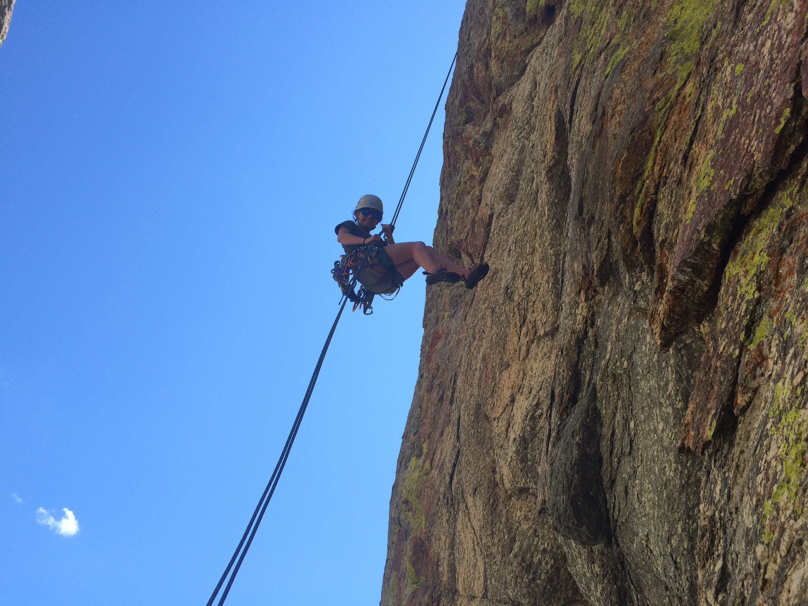
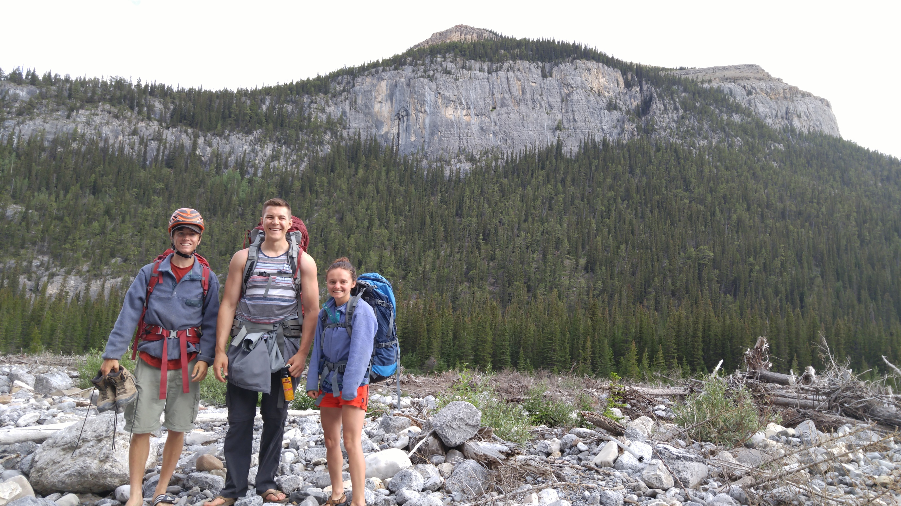
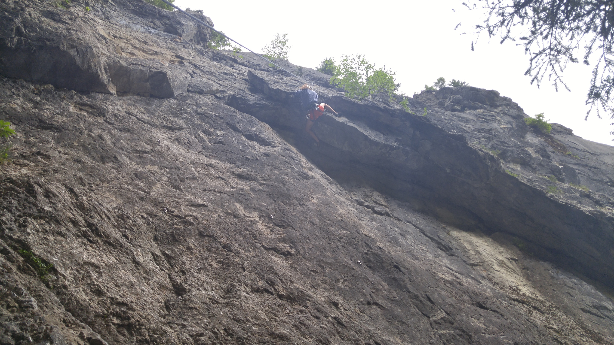
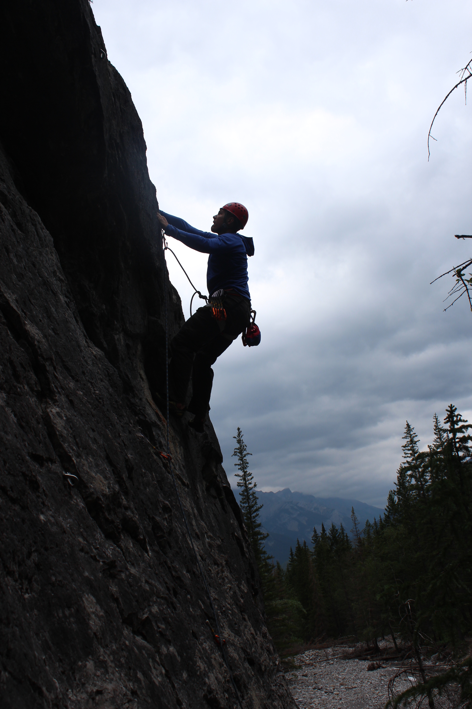
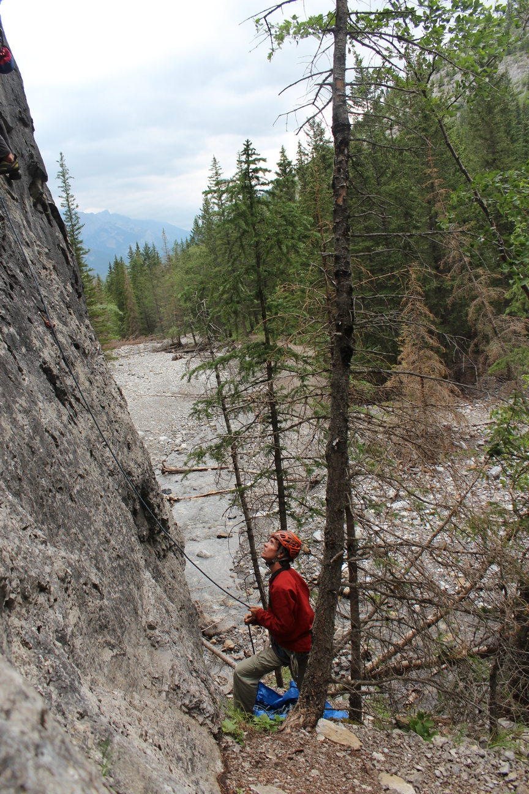

City of Rocks
First we stopped at City of Rocks. We stayed on a BLM area East of the climbing area. The area had about 10 sites. We had a huge site, which was perfect for our big group. The road in was rough, but completely passable for the Subaru (Watch for oil pan busters!). Luckily, it was only a few hundred feet of driving.
 The majority of the park is in the bottom left of the map, with the multipitch we climbed in the top right.
 The campsite was on a bit of a slope, nothing a few rocks can't fix.
 The drive from the campsite to the climbing area took about 10 minutes. Sometimes we hit some unexpected traffic jams.
 The first day we climbed trad.
 The second day we did a 4 pitch sport multipitch. The end included a very fun overhung rappel.
Ghost River Valley
Once we made it to Canada, we met up with Eric. Eric lately has been climbing at Ghost River Valley, which is West of Calgary. He said parts of the road were rough, so we loaded up his 2015 Outback and went West.
Even though the Ghost River is about an hour away from Calgary, it's incredibly remote feeling. To start you drive down a pretty smooth forest road, then, you get to the big hill. Mountain Project had this to say about the road.
When in doubt, get out and walk it first. Having a spotter for more adventurous sections isn't a bad idea either. Getting a trashed vehicle out of the Ghost is not cheap.
The most adventurous part of the drive is 2 substantial river crossings. The "road" through the Valley isn't a road as normal people think of it, it was formed from the aftermath of the huge 2013 flood that caused huge amounts of damage to infrastructure around Calgary. So far the "road" is just packed river bottom pebbles. Since the flood, bridges have not yet returned, so driving through is the only option. See the video below for one of our several river crossings.
The valley is full of Random Camping as the Canadians call it, so we found a site, and then headed off to Silver Tongue Devil crag.
 Me (Kyle) leading a route.
Me (Kyle) leading a route.
 Eric heading up another route.
Eric heading up another route.
 We also had a 4 legged friend Bella tag along for part of the day.
We also had a 4 legged friend Bella tag along for part of the day.
 Obligatory group shot at the end of the day. We climbed on the big face in the top right. (Me being super safe still wearing my helmet...)
Bow Valley
Just yesterday (July 4th, Independence day!) we climbed at Heart Creek near Canmore. The area is much less remote, with no river crossings involved. You just drive down Highway 1, and park in a gravel lot.
We found plenty of great sport climbing here.
 Kendra climbing a roof on one of the later, and colder, routes we climbed.
 Eric working his way up a 5.10a. About 20 meters up, while he had a bunch of rope out, his feet decided to leave the wall and he went for the biggest lead fall of his life!

Plenty of climbing done so far on the trip. Who knows where we'll end up climbing next!